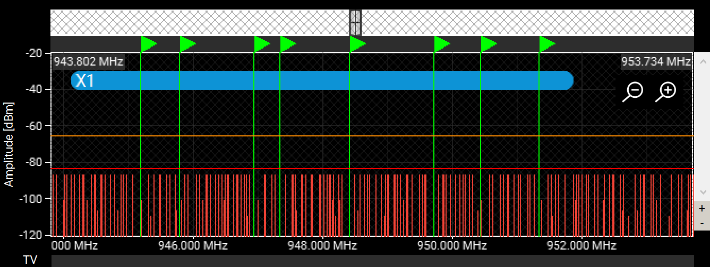
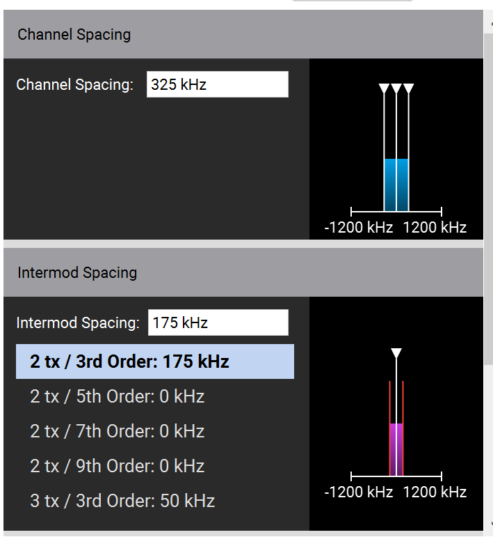
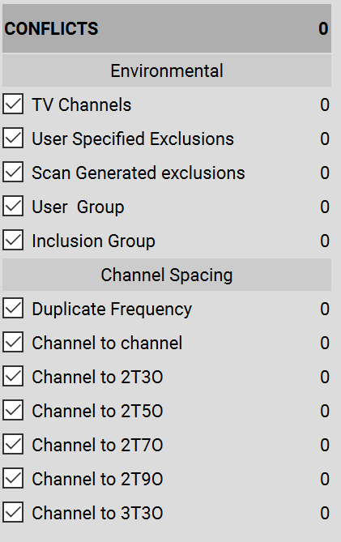

Project Proposal
TITLE: Parallel solver for the frequency assignment problem for a system of wireless mics
URL: https://shannoding.github.io/15418-wireless-frequency
Github: https://github.com/shannoding/15418-wireless-frequency
Paper: https://shannoding.github.io/15418-wireless-frequency/paper.pdf
SUMMARY:
- We are going to implement a parallel algorithm under a shared memory model that finds a set of compatible radio frequencies for a large set of wireless mics as quickly as possible.
- Each additional radio frequency in a system creates interference with every other frequency in the system.
- This is a variant of the “Frequency Assignment Problem” which reduces to a vertex coloring problem, an NP-complete problem.
BACKGROUND:
- The application we’re trying to accelerate is Wireless Workbench, a wireless mic frequency coordination software. The end goal of the software is to provide a list of frequencies for a set of wireless mics such that none of the wireless mics will conflict with each other.
- A conflict is when two sources are transmitting on the same frequency. The possible frequency sources are: the primary frequency assigned to the mic but also secondary or tertiary frequency products (“intermodulation products”) caused by various arithmatic combinations of the primary frequency of two or more mics.
- The frequency coordination program must pick a list of primary frequencies such that there don’t exist any primary-primary or primary-intermodulation conflicts.
- This is a compute intensive problem because each additional mic will create multiple intermodulation products per other mic in the system. This creates O(c * n^2) potential conflicts for n mics. Each mic needs to consider all potential conflicts. Simply checking for any conflicts is already an O(n^3) problem.
- Wireless Workbench has the ability to input some number of mics and constraints like what frequency range each mic can be tuned to and what criteria counts as a frequency conflict. It then outputs a valid list of primary frequencies for these mics that don’t conflict with each other.
- As this is a hard problem, Wireless Workbench is noticeably slower with each additional mic. It takes over 10 seconds to compute frequencies for 32 mics. In addition, it appears to use some kind of guess and check method as its answer is nondeterministic on each rerun of the same inputs.
- 
- There are many intermodulation products for only eight mics.
- The areas for parallelism is
- Parallelism per mic to check whether it experiences any conflicts from the rest of the mic system.
- Parallelism per type of frequency conflict to simultaneously compute a list of all unusable frequencies caused by each type of conflict
- Parallelism per frequency range as certain types of conflicts are limited to a frequency range. Potentially, solving the problem for a portion of the frequency range can be used to solve the problem for the full frequency range.
THE CHALLENGE:
- This problem is challenging as there are multiple dependencies O(n^2) between each mic and all other mics. In addition, there is no polynomial time optimal solution. As a result, we will attempt to approximate a result using several rounds of moving toward a more optimal configuration.
- This is still primarily a computer science centric project as the formulas for intermodulation products are very simple arithmetic combinations of frequencies.
- There is a large amount of computation (to check for conflicts, O(c * n^3) computations) but also a lot of communication as each mic needs to know about most of the results of the computations.
- Fortunately, the only data that needs to be accessed is the n primary frequencies of the n mics, which is a small, local set of data. All other data can be computed.
- The workload is possibly similar to a parallel deep learning workload as all “nodes” (mics) are extremely interconnected (completely connected graph) and the entire system is trying to move to a more optimal configuration.
- The highly interconnected nature makes mapping workload difficult.
RESOURCES:
- Introduction to the problem
- Electrical engineering terminology for the problem
- Theoretical introduction to similar frequency problems and their algorithms
- We’re planning to use a 8 core machine with SIMD. No special machines are needed as this type of program is supposed to be run on office type computers.
- The starting framework of the project will be the Wireless Workbench program. We’ll begin by implementing a subset of the features and then focusing on the frequency coordination feature in particular.
GOALS AND DELIVERABLES:
PLAN TO ACHEIVE
- Replication of the wireless mic inventory and frequency conflict type menus of Wireless Workbench

 - Parallel way to check whether a mic in a system of mics is experiences any conflicts
parallel for each pair of mics
conflict_set[i] = find_intermod(f1, f2)
check_conflicts(conflict_set) - Iterative, locally converging algorithm to improve the frequency assignment. Ideally it finds a solution that fits at least 90%+ of the mics that can be optimally fit.
- The solution also considers global constraints about what is a frequency conflict.
- Performance decreases wrt to O(n^2) instead of O(n^3) for n wireless mics.
HOPE TO ACHEIVE
- Iterative, locally converging algorithm that finds a solution that fits as many mics as Wireless Workbench can fit.
- The solution also considers constraints per mic about what is a frequency conflict and allows mics with different frequency ranges.
- A graphical display of assigned frequencies and constraints instead of a command line program
Poster session plans
- We plan to have an interactive demo where users can input a set of constraints and the program will attempt to assign good frequencies to all mics requested.
PLATFORM CHOICE:
- The parallel system we’re planning to use is shared memory. This is due to the high interconnectivity of the problem. All mics need to be aware of the current state of the other mics.
- We’re also planning to use SMPD as all mics need to calculate the same few types of conflicts, so they can reuse the computation code of each type of conflict. In addition, each unit of parallelism (a mic) is functionally identical to all the others.
SCHEDULE:
4/05
- Select parallelism libraries
- Outline the program in pseudocode
- Look into the underlying implementation of Wireless Workbench
4/12
- Implement the parallel “conflict checker” functions if given a set of frequencies and no additional conflict constraints.
- Benchmark the performance and adjust the unit of parallelism if needed.
- Implement a random frequency generator to use for testing.
- Outline the frequency optimizer functions in pseudocode
4/19
- Add frequency conflict constraints to the conflict checker including minimum allowable primary-intermodulation frequency spacing.
- Implement the frequency optimizer function sequentially or with naive parallelism
4/26
- Improve the parallel implementation of the frequency optimizer.
- Benchmark the results as the number of wireless mics increase and make many different iterations.
5/03
- Continue to improve the frequency optimizer
- Attempt the “hope to acheive” goals, in particular, allowing mics to have different frequency ranges and additional frequency range constraints.
- Improve command line / graphical interface in preparation for the poster session